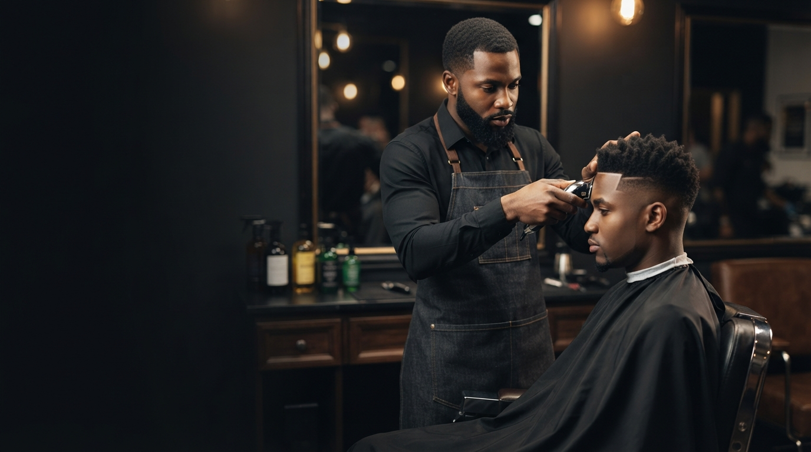
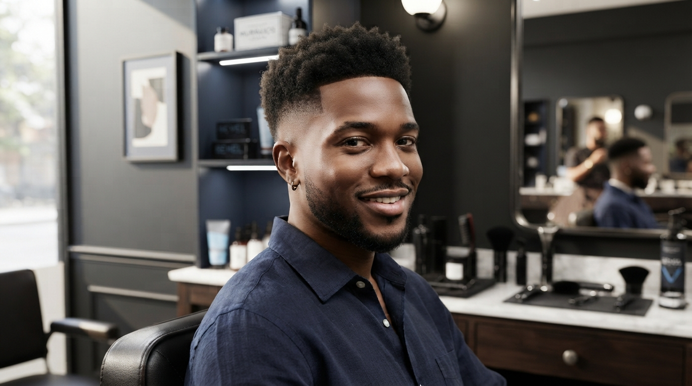
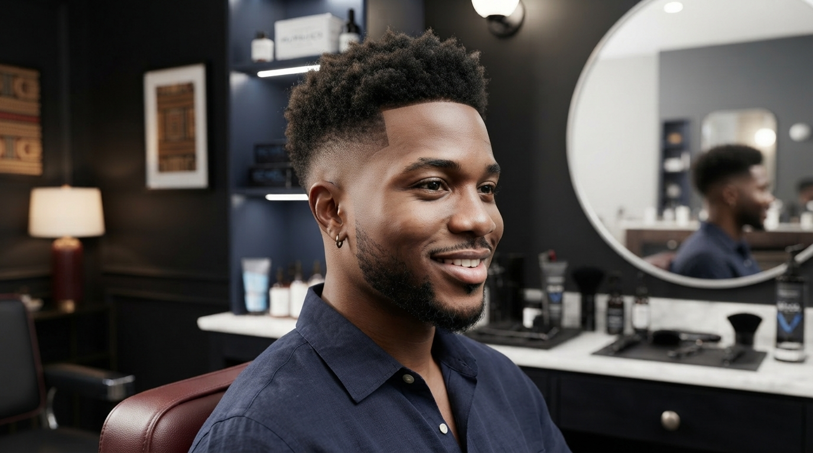
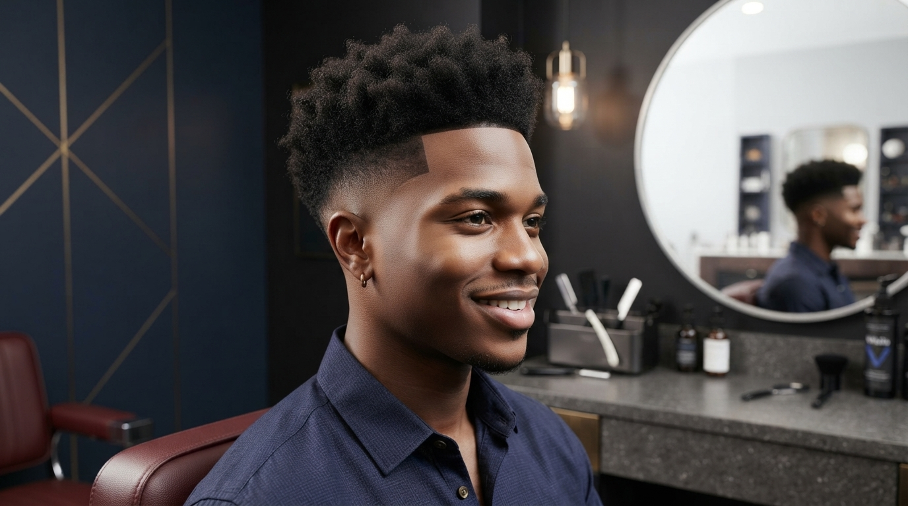
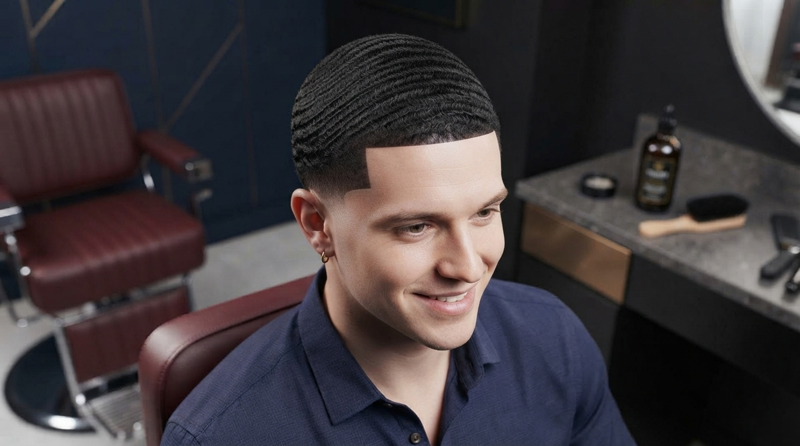

Signature Haircut
A tailored haircut shaped to your face, hair texture and personal style.
THE GLINT EXPERIENCE
Precision cuts, thoughtful grooming and a finish that feels like you.
Reserve an appointment
WHO WE ARE
Glint Saloon is a men's grooming studio built around precision barbering, personal style and a welcoming experience. We believe a good haircut should do more than look good in the mirror. It should feel right for your routine, your personality and the way you want to show up.
From clean fades and classic cuts to beard care and textured styles, our focus is careful consultation, consistent craftsmanship and attention to the finishing details.
Whether you know exactly what you want or need a little guidance, we'll help you find a look you can maintain with confidence.
WHAT WE DO
Thoughtful grooming, shaped around your preferred look.
A tailored haircut shaped to your face, hair texture and personal style.
Clean low, mid and high fades with controlled blending and a sharp finish.
Beard shaping and detailing that works with your natural growth pattern.
A coordinated haircut and beard service for a balanced overall look.
Careful styling for curls, coils, textured crops and short afros.
Neat edge detailing to refresh your existing haircut between visits.
FIND YOUR LOOK

A subtle, clean fade that keeps the overall look versatile.

A balanced fade with a little more contrast around the sides.

A sharper, higher blend for a more defined silhouette.

A neat wave pattern that rewards consistent care and brushing.
THE PEOPLE BEHIND THE CRAFT
These are the five sample profiles developed for the Glint website prototype.
01
Master Fade Specialist
Focuses on skin fades, drop fades and precision blending. Daniel takes a careful, consultative approach to creating fades that complement each client's head shape.
Qualifications: Advanced Barbering Certificate; Precision Fade Masterclass.
Experience: 9 years
02
Texture & Natural Hair Specialist
Works with afro-textured hair, curls, tapers and textured crops, with an emphasis on styles that look polished and fit everyday routines.
Qualifications: Professional Barbering Diploma; Certified Natural Hair Practitioner.
Experience: 8 years
03
Beard & Grooming Specialist
Specializes in beard sculpting, beard fades and grooming packages, balancing beard shape with the client's haircut and natural growth pattern.
Qualifications: Advanced Men's Grooming Certificate; Beard Design Specialist Award.
Experience: 7 years
04
Creative Barber & Design Artist
Creates hair designs, hard parts and precise line work, bringing a creative touch to modern cuts while keeping each result wearable.
Qualifications: Master Barber Certificate; Advanced Hair Design Award.
Experience: 6 years
05
Classic Cut & Style Consultant
Focuses on classic cuts, business styles and scissor work, helping clients choose looks that suit their lifestyle and maintenance preferences.
Qualifications: Senior Barbering Diploma; Men's Style Consultation Certificate.
Experience: 11 years
CLIENT NOTES
Sample testimonials for the website layout. Replace these with genuine customer feedback before publishing.
“
The consultation made it easy to explain what I wanted. The finish was neat and suited me.
— Sample client
“
Good attention to detail, especially around the fade and the final line-up. I left feeling well looked after.
— Sample client
“
The team helped me choose a style that works with my hair texture and is easy to maintain.
— Sample client
LET'S GET YOU BOOKED
Choose your service and preferred specialist, then send a reservation request.